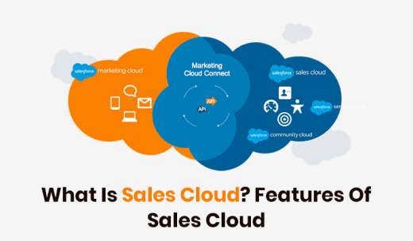
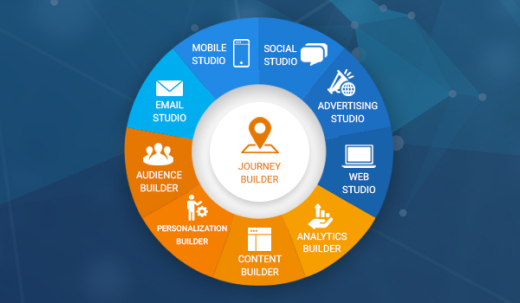
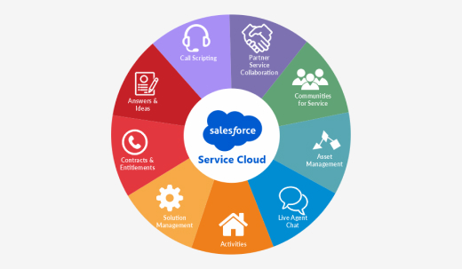

Through Salesforce Customer 360, our new cross-cloud technology initiative that enhances the integration of our Marketing, Commerce, and Service clouds, we will enable companies to connect their customer data across the various offerings and deliver a unified customer experience.
Customer 360 is designed to help companies move beyond an app- or department-specific view of each customer by making it easier to create a single, holistic customer profile to inform every interaction.
Sales Cloud empowers sales teams of companies of every size and industry to sell faster, smarter and in the way they want. Our customers use Sales Cloud to store data, monitor leads and progress, forecast opportunities, gain insights through analytics and relationship intelligence, and deliver quotes, contracts and invoices.
Marketing and Commerce Cloud. Marketing Cloud enables companies to plan, personalize and optimize one-to-one customer marketing journeys, including interactions across email, mobile, social, web and connected products. In addition, companies can segment and target audiences to power precise digital marketing at scale.
With Marketing Cloud, customer data can also be integrated with Sales Cloud and Service Cloud in the form of leads, contacts and customer service cases to give companies a complete view of their customers.
Our Commerce Cloud empowers brands to unify the customer experience across all points of commerce, including mobile, web, social and store. With embedded AI that delivers a personalized shopping experience and a robust partner ecosystem, Commerce Cloud helps companies drive increased engagement, conversion, revenue and loyalty from their customers.
Service Cloud enables companies to deliver smarter, faster and more personalized customer service and support.
Our customers use Service Cloud to connect their service agents with customers anytime and anywhere, on popular devices and across multiple channels: phone, email, messaging, chat, live video, SMS, self-service web portals, social networks, online communities and directly within their own products and mobile apps.
In addition, Service Cloud offers a field service solution that enables companies to connect agents, dispatchers and mobile employees through one centralized platform, on which they can schedule and dispatch work intelligently, and track and manage jobs in real-time.
Most of our service offerings operate on a single customer success platform and are deployed in an identical way even though we have offerings in multiple enterprise cloud computing markets, including as a result of our acquisitions. Our core offerings are suited to meet the needs of our customers in certain industries, such as solutions for financial services, healthcare and government.
Additionally, our core offerings enable companies to quickly create and manage trusted, branded digital destinations for customers, partners and employees, collectively referred to as community management. This allows companies to engage and collaborate directly with groups of people by giving them access to relevant information, apps and experts.